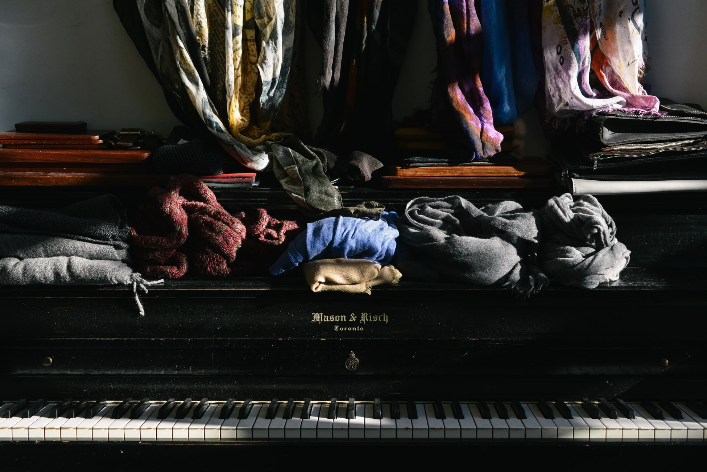

Vous connaissez les pantalons trop long? Les boutons qui disparaissent? Les pulls éffilochés? Nous aussi et nous avons trouvé un moyen d'y remédier.
The sew fabric c'est quoi? Une histoire, des services, des talents.
Il y a quelques années maintenant que nous vous proposons nos services de retouches coutures en quelques clics seulement. Dans nos ateliers Français, nos mains de fées réparent, ajustent et perfectionnent vos vêtements. Depuis nous avons évolué dans notre offre de services. Aujourd'hui, nous sommes ravie de vous faire part de notre service sur-mesure. En effet, nous avons la chance de pouvoir co-confectionner vos futures pièces préférées ensemble.
Vous pouvez aussi retrouver nos dernières actualités dans notre onglet "Nos actions" ou en vous abonnant à la news letter.
Je m'abonneQuelles pièces voulez-vous retoucher?
Hauts Bas Manteaux AccessoiresApportez nous vos vieux vêtements, nous les recyclerons pour en faire des pièces uniques.
